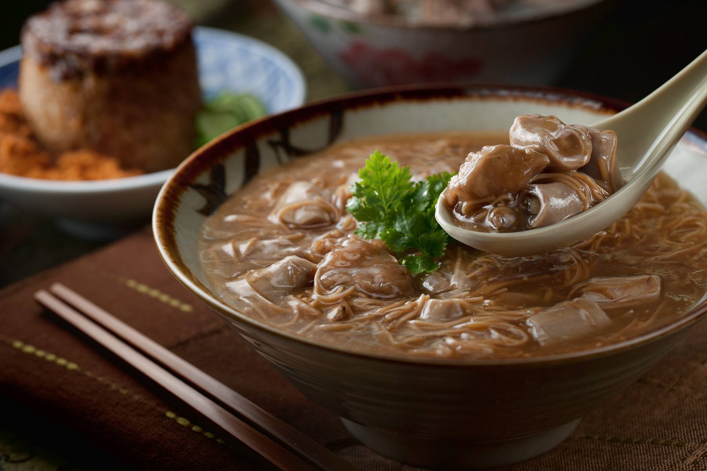
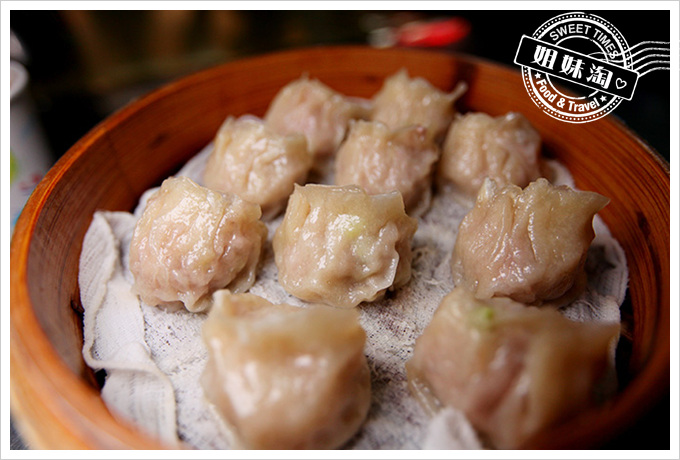

| 台南 | 高雄 | 屏東 |
高雄：
來到高雄當然就是要吃海鮮啦~!來到高雄當地第一個品嘗的當然就是旗津的海鮮， 當地的海鮮基本上都是先撈的，所以可以說是新鮮到不能再新鮮， 不管你想要蒸的、炒的、炸的、煮的、烤的甚至是生吃都可以在這裡試看看， 平常陸地上的動物吃膩了的話不妨可以來到高雄這塊海鮮聖地來品嘗一下生活海裡面的魚類喔!! 體驗他們為你帶來餐桌上的活力吧~ 首先! 第一家：鳳邑麵線 從鳳山區起家，赫赫有名的鳳邑麵線，以超豐富用料、超划算價格收服高雄民眾， 份量大、絕對不怕吃不飽！麵線、肉圓、米糕這些傳統小吃基本款就是鳳邑麵線的主打， 其中麵線糊更是讓人讚嘆不已，新鮮脆彈大腸、炸過的肉塊、古早調味的麵線糊， 在香菜的點綴下完美調和，雖然比較偏重口味，想中和的話也可以點一份四神湯， 裡頭滿滿的薏仁完全能看出店家的誠意呢！  (圖片來源：鳳邑麵線FB) 第二家：許記蒸餃
1986年開始飄香的許記蒸餃，位在高雄火車站附近一個不起眼的轉角，
樸實簡單的招牌下，經營的是老闆多年的堅持與品質。許記蒸餃的麵食皆為手工現做，
現切、現擀的麵團，考驗老闆的技巧、速度，而這些用心都反映在Q彈的麵皮，還有顧客滿足的臉上。
來到許記蒸餃必點招牌蒸餃，皮薄、餡多，韭黃的清甜提升了內餡層次，調味細膩，
不管單吃或沾醬都十分對味，還有蒜頭可以自行添加。如果稍微看過菜單，應該會對「麵團濃湯」感到困惑，
其實這就是「麵疙瘩」，同樣現場製作的疙瘩又Q又有嚼勁，伴著酸辣的羹湯下肚，熱呼呼的就算夏天吃也超爽快！

(圖片來源：https://goo.gl/RqKDsN)